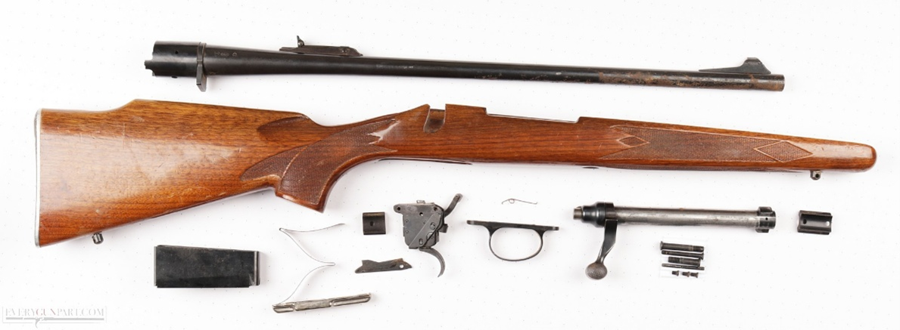
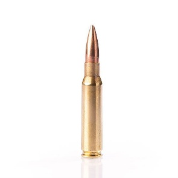

Ein Blick in die Geschichte
Die Remington 700 wurde Anfang der 1960er Jahre eingeführt und war schnell als sauberes, kompaktes, Bolt-Action Gewehr beliebt. Anders als viele kurzlebige Modelle hat die 700 eine bemerkenswerte Langlebigkeit erreicht, sie wurde in zahllosen Varianten gebaut und diente als Basis für zivile Jagdmodelle, Sportversionen und sogar militärische Scharfschützenplattformen. Genau diese Vielseitigkeit ist einer der Gründe, warum das Modell so legendär wurde.
Aufbau und Mechanik, warum sie so vertraut wirkt
Auf den Punkt gebracht: die 700 ist ein klassischer Bolzenrepetierer mit doppelten Verriegelungswarzen am Verschlusskopf, sauberer Führung und einer sehr stabilen Repetiermechanik. Viele Modelle nutzen einen geprägten Stahl- oder Aluminium-Receiver, auf dem Lauf und Schaft aufbauen. Die Verriegelung erfolgt robust und direkt, das sorgt für gute Präzisionspotentiale.
Kaliber und Ballistische Eckdaten
Was die Remington 700 auch beliebt macht ist das sie in verschiedenen Kalibern erhältlich ist, jedoch ist sie meist im Kaliber .308 Winchester auch bekannt als 7.62x51mm. Aber sie gibt es auch im Kaliber .223 Remington, 6.5 Creedmoor, .30-06 Springfield und viel mehr.
Ballistisch gilt: die 700 liefert genau das, was die gewählte Patrone hergibt. Eine 700 in .308 mit einem 175 gr Matchgeschoss liefert zum Beispiel bei passenden Lauflangen und guter Munition konstant enge Gruppen auf 100 m; 6.5 Creedmoor-Setups streben oft nach hoher Ballistikeffizienz bei mittelgrossen Distanzen. Die Plattform selbst ist nicht der limitierende Faktor viel eher Munition, Laufqualität, Schütze und Montage.
Grundsätzlich kann man sagen die Remington Model 700 wird dich auch auf grosse Distanzen nicht enttäuschen.
Fazit
Zusammenfassend kann ich sagen die Remington 700 hat sich seit über 60 Jahren bewiesen und dass im Vietnamkrieg oder auch im Golfkrieg. Sie bietet eine ideale Plattform für allerlei egal ob Jagd oder Militär.
Durch ihr einfaches Bolt-Action Design ist es einfach zu warten, verlässlich und auch präzise.